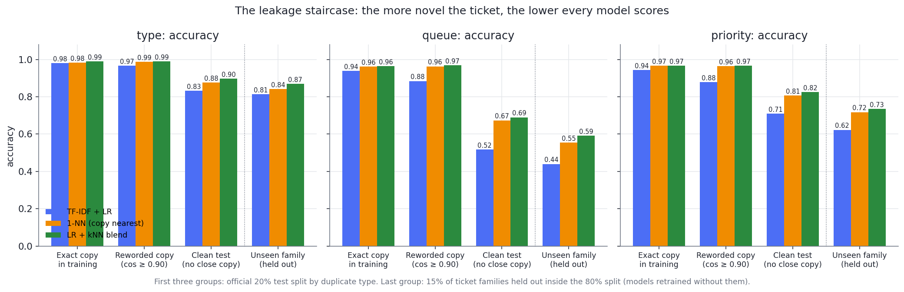
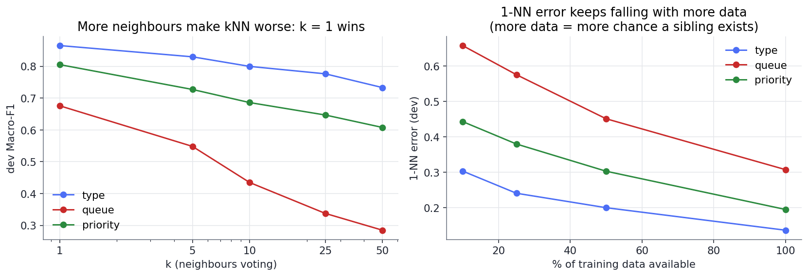
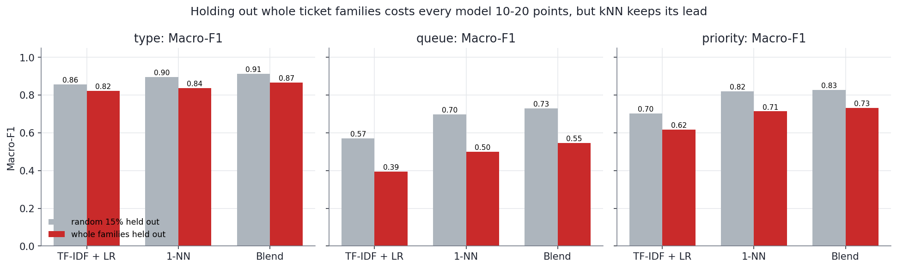
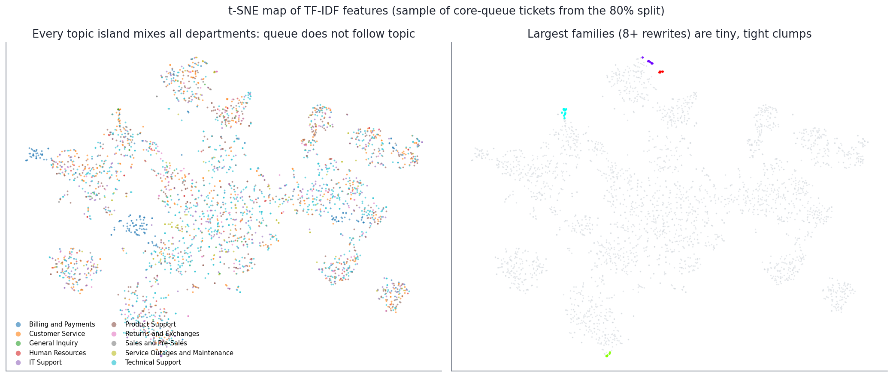
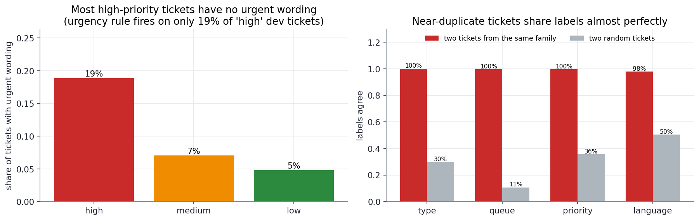
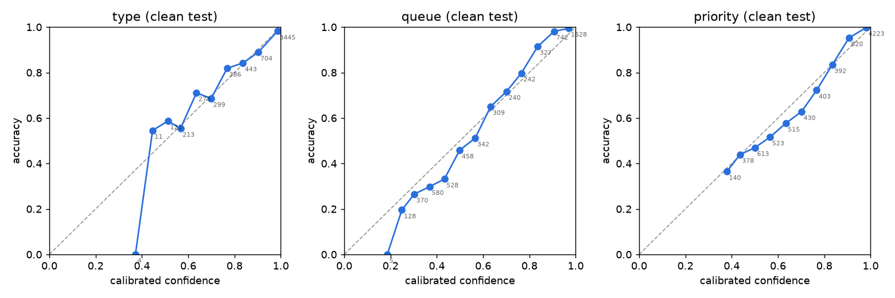
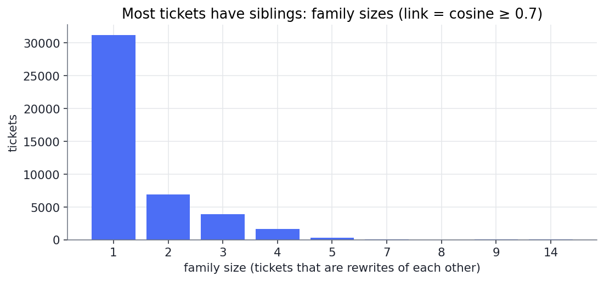
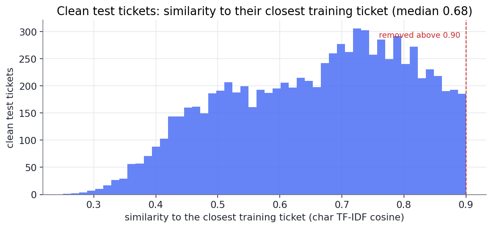
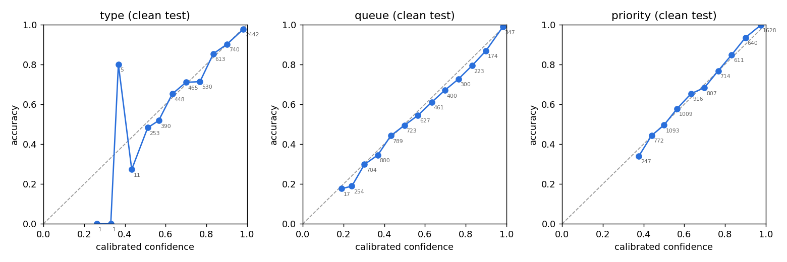

The talk track, the live links and every figure in one place. Read the SAY lines aloud, do the DO lines on screen. Figures appear at the moment you show them; all of them are also in the gallery at the bottom.
Support teams get tickets in English and German. An urgent outage that lands in the wrong queue, or sits at "medium", costs hours. SentinelDesk classifies every ticket, decides whether a human must see it now, and drafts a reply that only says what past resolved tickets support.
Before training anything we checked the split. 22% of the official test tickets are exact copies of training tickets, because two of the source CSVs overlap. About 900 more are reworded copies. Copies share labels 99.6% of the time, so any score on the raw test set is inflated.
So we built a clean test set: nothing within cosine 0.90 of a training ticket. Every number we report is on that set, next to the full and the harder family-held-out numbers.

About 29% of training tickets have a reworded sibling. Inside a family, labels agree almost perfectly. That is why copying the single most similar ticket beats logistic regression, and why one neighbour beats fifty.

We asked whether kNN only wins by memorising siblings. We held out whole families and retrained everything. Every model loses 10 to 20 points, but kNN keeps its lead. So local similarity genuinely fits this data, and the family-held-out number is our honest estimate for brand-new tickets.

The department label does not follow topic: every topic island in this map mixes every department. And priority barely follows urgent wording: 81% of "high" tickets contain no urgent words at all. A classifier trained on these labels will miss real emergencies.


So we ship two systems side by side: a statistical classifier for routing, and an explicit safety layer for escalation: English and German urgency rules, plus a rule that sends anything without a close precedent to a human.
Open link 1. Click the hospital VPN example, then Triage.
The classifier alone calls this priority low. The urgency rule catches "no clinician can connect, all wards" and escalates it. That is the dual system working on the brief's own example.
Below, retrieval pulls the most similar resolved tickets from the knowledge base, with near-copies removed so we don't show five rewrites of one ticket. The reply draft uses only sentences from those agents' answers, and every sentence cites its ticket ID. A guard removes any sentence with a number, a price or a promise, so the draft never invents a refund or a deadline.
Click a citation chip to jump to its precedent. Then run the German billing example.
German in, German out. The precedents are German billing tickets.
Type nonsense into the body and run it.
No close precedent, so it refuses to draft and routes to a human instead of guessing.
Send an email to the inbox address (link 3) with an outage subject. Switch to the HelpDesk (link 2) and open the new ticket after about 10 seconds.
The email became a ticket, triage set its priority, the gate escalated it, and the grounded reply draft with its cited precedents is attached as an internal note for the agent. Everything runs on Google Cloud Run.
We found and removed the leakage, we tested why kNN wins instead of assuming it, and we built safety rules for what the labels miss. The confidence scores are calibrated, so a 70% means about 70%.
| Macro-F1 (LR + kNN blend) | type | queue | priority |
|---|---|---|---|
| Clean test set | 0.90 | 0.68 | 0.83 |
| Unseen families (honest estimate for new tickets) | 0.87 | 0.55 | 0.73 |

Show the figures below and describe the flow. If the HelpDesk lost its tickets (they reset on every restart), send the two demo emails again. If the triage page is slow on first load, wait 20 seconds: the instance builds its retrieval index at startup.


